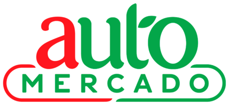

Where to buy
We’re in your supermarket’s freezer aisle.

Store locations ↗- Store locations ↗
- Store locations ↗
- Store locations ↗
- Store locations ↗
And in restaurants
You can order your favourite dishes made with our bread at some of the best restaurants in the country — Franco, Simple, Negroni, Árbol de Seda, Chez Christophe and Momo Café, among others.